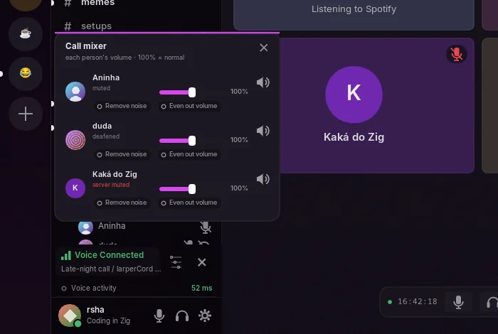

Voice calls
larperCord joins real Discord voice channels and calls in DMs and groups, with end-to-end encryption. Everything voice-related runs on its own thread, created only when you join a call. Outside a call, the module uses no CPU and the app doesn't initialize audio, unless you open Settings → Voice, which reads the microphone for its level meter while it's open.
Using it
Click a voice channel to join. The panel above your user shows the call, with mute, deafen and disconnect. You can also leave through "Leave call" when you right-click the voice channel. Whoever is talking gets a ring around their avatar.
In a DM or group DM, the phone button in the header starts a call; terminal themes show [call]. The header shows who's in the call and who's still being rung. An incoming call shows a card with Accept and Decline and rings until you answer, with a system notification and a taskbar flash, even with the app in the tray. In Do Not Disturb, or in a muted conversation, the card comes without the ringtone. Ringing stops when you answer on another device or the caller hangs up.
Right-click the microphone or headphone button, or the small arrow that shows on hover, to switch the device and its volume, mid-call too; during a call, right-clicking the voice panel shows both. Ctrl+Shift+M mutes and Ctrl+Shift+D deafens.
The mixer gives each person their own volume, plus two switches that are off by default and only touch that person: Remove noise (the same noise suppression as your microphone, on their sound) and Even out volume (raises a quiet voice and lowers a loud one toward everyone else's level).

The panel also shows your ping, the connection quality by color and when you're transmitting, and it warns you if the microphone doesn't open or if the server muted or deafened you. Other people's mute and deafen show in the call list.
Channels where you lack the permission to connect are shown with a padlock, and the app doesn't try.
Settings → Voice
- Microphone and output: remembered by name, back to the default if they disappear, and you can switch in the middle of a call.
- Volumes, a live microphone level and Test microphone, which plays back what you say, with the filters on. Use headphones.
- Voice activity: an adjustable threshold on the meter, or Automatic sensitivity, which learns your background noise.
- Push to talk: a key or mouse button. It only works while the window is focused, and sending continues for a moment after you release, so the last word isn't cut.
- Filters: a high-pass that removes rumble below 90 Hz and a noise gate. Each one can be turned off.
- Noise suppression: Off or RNNoise, on by default and switchable mid-call. It runs on your computer, delays your mic by 20 ms and costs about 2% to 3.5% of a core on a 2011 Core i5 while the mic is open, and less on newer processors. Off, muted or with the push-to-talk key released, it costs nothing.
- Sounds: one row per event (you join or leave, someone joins or leaves your call, mute, unmute, deafen, undeafen and the ringtone). Each can be Off, Classic, Soft, Crystal, Retro or your own WAV or Ogg Opus file (up to 2 MB and 5 s, 15 s for the ringtone), with a preview and a volume. Call sounds still turns all the short ones on or off.

How it works
| Layer | What it uses |
|---|---|
| Signaling | Voice gateway v8 over WebSocket, with heartbeat (seq_ack) and RESUME when the connection drops |
| Connection | IP discovery (74-byte packet) and Select Protocol over UDP |
| Transport encryption | RTP with aead_xchacha20_poly1305_rtpsize |
| End-to-end encryption | DAVE over MLS, through libdave and MLSpp |
| Codec | Opus at 48 kHz stereo, 20 ms per packet. Lost packets become Opus packet-loss concealment |
| Audio | SDL3 mixes. Each person is one SDL_AudioStream on the same output device, and their volume is the stream's gain. The microphone is a stream read every 20 ms |
A few details that took work to get right:
- The "speaking" opcode (op 5) goes out once when the session opens, and again on resume. It doesn't toggle on every sentence, since the server dropped the start of each one that way.
- The RTP clock keeps moving with real time while you're silent, so receivers don't drop your packets after a pause.
- Jitter margin applies only at the start of each talk spurt and inside a speaker's own pauses. Applying it whenever the queue emptied caused audible gaps.
- The RTP clock tells a speaker's pause from a late packet: the sequence number only moves with a packet, the clock always moves. A noise gate closing isn't a bad network.
- When a queue is about to run dry, Opus concealment fills in and fades to zero, so a stall never cuts mid-wave. Audio that doesn't continue from where it stopped starts from the last value played.
zig build voz-rederuns real Opus through simulated bad networks and compares the playback logic, counting gaps and clicks.LARPER_VOZ_FALApicks a speech file andLARPER_VOZ_WAVsaves the output to listen to.- People already in a call can arrive before DAVE exists, so they're kept and added when it starts.
Limits today
- Push-to-talk only works while the window is focused, because SDL has no portable global shortcut.
- Noise suppression targets steady noise. Typing and bangs may get through, and other voices stay.
- No screen sharing, camera or streaming.
- No automated test for a real call. QA covers the UI and the settings, with a fake audio device.
Debugging
On Linux, start it from a terminal (quit it first if it's open in the tray) with:
LARPER_VOICE_DEBUG=1 larpercordOn Windows, or without a terminal, turn on Settings → Advanced → Save debug log before joining the call, then use Open the log folder. The file is %LOCALAPPDATA%\larpercord\debug.log on Windows and ~/.cache/larpercord/debug.log on Linux.
Either way you get opcodes, close codes and DAVE events, and microphone level and frames sent. It never contains the token or any keys.
To test only the connection, --voice-test joins a channel for 25 seconds, always muted:
LARPER_TOKEN=... larpercord --voice-test GUILD_ID CHANNEL_IDOn Windows it only takes the token from LARPER_TOKEN, and its text has to go to a file, since there's no console:
$env:LARPER_TOKEN = [Net.NetworkCredential]::new('', (Read-Host 'Token' -AsSecureString)).Password
Start-Process "$env:LOCALAPPDATA\Programs\larperCord\larpercord.exe" -ArgumentList '--voice-test','GUILD_ID','CHANNEL_ID' -NoNewWindow -Wait -RedirectStandardError voice.txt; Get-Content voice.txt
Remove-Item Env:LARPER_TOKENThe protocol follows Discord's voice documentation and the DAVE protocol documentation.